Graphics
Graphics I've collected from other websites and graphic resources I've used or I just think are cool. If you want credit or something taken down, just let me know. No hotlinking.


 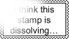
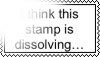
 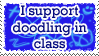
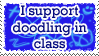
 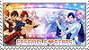
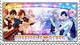


 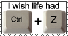
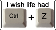


 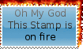
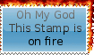

 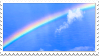
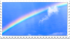


 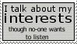
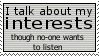
 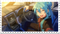
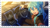
 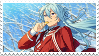
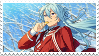

 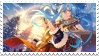
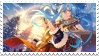


 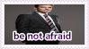
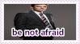

 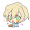
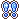
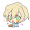
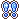


Resources
"The usual" refers to pixels, stamps, blinkies, buttons, dividers, etc. I'm too lazy to type it out all the time. Although, even if I say "the usual", it might not have all these categories.
- blinkieobsession: A lot of blinkies. It's in the name.
- blinkies.cafe: Blinkies and a blinkie generator.
- pixel-soup: Pixels. Haven't used anything here myself, though.
- pixelbank: The usual. I like the collection here.
- pixelsafari: The usual.
- decocore: The usual. I found the Ensemble Stars stamps here.
- horrore: The usual. Also stamp templates and textures which I find cool.
- shinybuttons: IMVU status buttons.
- stamps: Stamps. It's in the name. A lot of fandom ones.
- internet bumper stickers: I use these on my homepage. I like to think these are practically blinkies just bigger and not animated.
- acanthemp3: Ensemble Stars blinkies
- fluffmoth on FlightRising: Identity badges of all kinds.
- yumenosakiacademy: "This user" bars, stamps (mostly fandom), and blinkies.
- biscuit: The usual.
- hekate: 88x31 button maker.
By Me
Free to use assets. Credit not needed but appreciated.

Not by Me
Blinkies
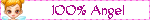


 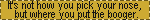
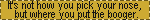

 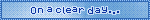
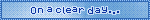


 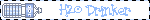
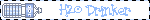


 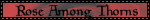
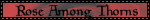


 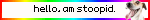
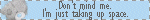
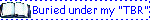
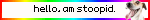
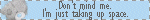
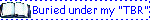
 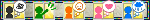
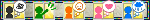


 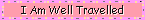
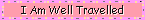

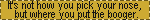
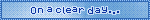
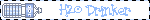
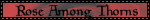
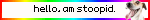
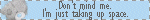
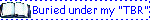
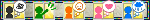
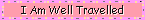
Button
Stamps
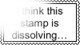
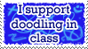
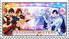
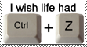
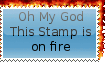
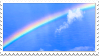
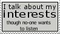
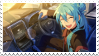
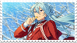
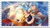
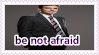
Pixels
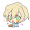
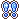